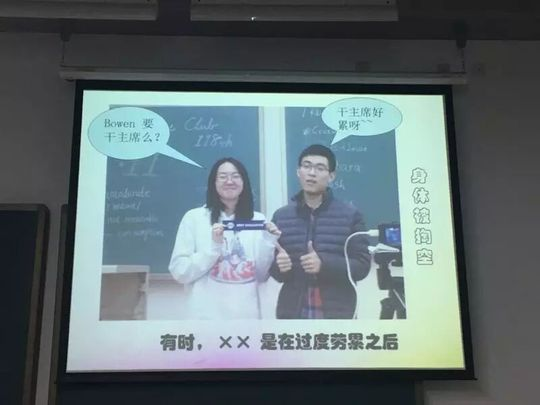

F
Francis
高高帅帅、爱笑又高情商的暖系小鲜肉，从失恋走进头马、在掌声里重新学会幸福。
会员活跃 2016–2017出现 12 次 · 12 篇3 场演讲
Francis（王祥祥）于2016年5月底加入北航Toastmasters。在第139次"童真"中文会议（2016-05-30）的纪要里，他被正式宣布入会，与Eric一同成为俱乐部的新鲜血液。初登台时他被大家记住的标签是"爱笑"——本该满是笑料的童年回忆，因为讲到爷爷而变得动情，于是有了那句俱乐部里流传的祝福："爱笑的男生运气不会太差"。
入会后的他成长得很快。两周后的第141次会议（2016-06-14），他带来破冰演讲CC1《Musics》，一上来就大谈对音乐的热爱，还在台上放了一段轻音乐娓娓道来，是个不折不扣"爱音乐的boy"。更打动人的是他来头马的缘由：纪要里写到，Francis刚来时正从一段失恋中走出，并不快乐，他选择来到头马分享他人的快乐、打开自己、尝试新生活，也尝试重新去触碰幸福。于是他的CC2选择直面这个主题——《I forgot what happiness feels like / I'm tired》，向大家坦诚自己对"幸福是什么"的困惑。
台上之外，Francis是个高情商、很有故事的人。在一次次即兴演讲里，他谈朋友的多元、谈如何用100元安排假期、谈对网红的清醒判断、谈坚持冥想这件难事；同伴评价他"绝对是很有故事的人，情商也超高"。他与Amy的搭档对话被笑称"真的很般配"，性格里既有男生的高大帅气，也有难得的真诚与温柔。
从2016年盛夏到2017年元旦，Francis的身影持续出现在北航头马的舞台与合影中——元旦趴的游戏环节里也有他和火山、多老师的快速配对小游戏。他不是聚光灯最中央的那一个，却是那种让会议变得温暖、让新人觉得"来对了地方"的存在。
里程碑
- 2016-05-30 正式入会 ↗在第139次'童真'中文会议纪要中被宣布加入北航TMC，与Eric同期入会。
- 2016-06-14 破冰首秀 CC1《Musics》 ↗第141次会议完成破冰演讲，以音乐为题，台上播放轻音乐娓娓道来。
- 2016-07-01 CC2 直面'幸福' ↗第143次会议讲述自己从失恋中走出、在头马重新寻找幸福的心路。
- 2017-01-06 元旦趴留影 ↗出现在第164次元旦晚会的游戏环节，持续活跃于俱乐部。
闯关之路 · Competent Communication
✓
CC1
破冰
✓
CC2
组织你的演讲
CC3
明确目标
CC4
怎么说
CC5
肢体在说话
CC6
声音的变化
CC7
研究你的主题
CC8
善用视觉辅助
CC9
以理服人
CC10
激励听众
做过的演讲 · 3 场
破冰演讲，大谈对音乐的喜爱，并在台上放了一段轻音乐，在乐声中娓娓道来，是个爱音乐的男孩。
刚从失恋走出，来头马分享他人的快乐、打开自己，坦诚自己对'幸福是什么'的困惑，尝试重新幸福。
现代人每天起早贪黑、事务繁多，他和大家一样感到疲惫——这次演讲讲是什么让他累，又将如何面对这份疲惫。
担任过的会议角色
备稿演讲者(Speaker)×3即兴演讲者(Table Topic Speaker)×6
为俱乐部做的事
- 以新成员身份持续活跃于即兴与备稿演讲环节，为会议带来真诚而有温度的分享
- 坦诚讲述自己从失恋走向'重新幸福'的经历，鼓励大家打开自己、尝试新生活
- 作为'爱笑'的暖系成员，活跃会议气氛，让新人感到亲切与被欢迎
- 参与俱乐部活动与节庆（如元旦晚会游戏环节），维系俱乐部的凝聚力
照片墙 · 时间线
共 30 帧，取自 TA 在场的会议。




完整足迹 · 12 次出现（点开，每条可跳转原文）
- 2016-05-17第137次 · 与Amy即兴双人演讲
- 2016-05-30第139次 · 入会
- 2016-06-09第141次 · 预告CC1演讲《Musics》
- 2016-06-14第141次 · 做CC1演讲《musics》谈对音乐的喜爱
- 2016-06-20第142次 · 即兴演讲回答坚持做的难事(冥想)
- 2016-07-01第143次 · 做CC2演讲I forgot what happiness feels like
- 2016-07-04第143次 · 即兴并做CC备稿演讲谈幸福
- 2016-07-29第147次 · 做CC2演讲I'm tired
- 2016-10-02做即兴演讲
- 2016-10-26第156次 · 做即兴演讲，谈100元如何安排假期
- 2016-11-26第160次 · 做即兴演讲，谈朋友的多元化
- 2017-01-06第164次 · 参与快速配对小游戏
“Francis刚来头马的时候刚刚从失恋中走出，不是很快乐，来到头马分享他人的快乐，打开自己，尝试新生活，尝试重新幸福。”